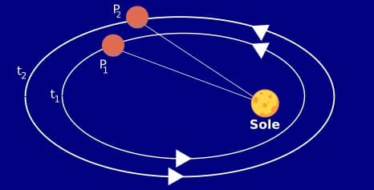

Per quanto riguarda l'ambito della fisica, il '600 fu un periodo di grandi scoperte che rivoluzionarono il mondo, ma in particolare andremo a parlare delle leggi di Keplero, le quali furono significanti per analizzare e capire meglio i moti dei pianeti all'interno del nostro sistema solare.
Le leggi di Keplero sono delle leggi relative al moto dei pianeti intorno al Sole, formulate da Johannes Keplero tra il 1608 ed il 1619.
La formulazione di queste leggi fu possibile grazie ai numerosi dati raccolti dal suo maestro Tycho Brahe. Studiando attentamente i suoi dati, si accorse che era presente una discrepanza tra l'osservazione e la teoria. Brahe sosteneva che le orbite dei pianeti fossero circolari, ma Keplero ritenne che ciò non fosse propriamente corretto e quindi, dopo accurate osservazioni, giunse alla conclusione che le orbite dovessero essere ellittiche
Queste leggi sono anche note come:
Legge delle orbite elittiche
Prima legge di Keplero formulata nel 1608, essa stabilisce che le orbite dei pianeti sono ellittiche e che il sole occupa uno dei due fuochi.Torna al menù principale
Legge delle aree
Seconda legge di Keplero enunciata per la prma volta nel 1609, essa afferma che i pianeti in rivoluzione intorno al Sole spazzano aaree uguali in tempi uguali.Torna al menù principale
Legge dei periodi
Terza legge di Keplero formulata nel 1619, essa stabilisce che il quadrato del periodo di rivoluzione di un pianeta intorno al Sole è proporzionale al cubo della distanza media del pianeta dal Sole.Torna al menù principale 